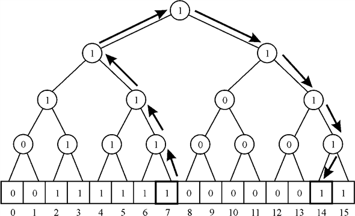

time in all
these operations. In either of the data structure operation the
worst possibility makes any of the above case to take time.
time in all
these operations. In either of the data structure operation the
worst possibility makes any of the above case to take time.Van Emde Boas tree uses direct addressing approach to store the key values in it. For example a Van Emde Boas tree having thekeys 3, 5, 8, 9, 12,13, 14, 15,would be created as below:
Van Emde Boas Tree is already way efficient and memory saving than any other self-balancing tree structure. However, this can be made more efficient in terms of speed of search as well by superimposing a binary tree at the top of it. This can be achieved by creating a binary tree that holds a 1 in its node if any of its children have value 1 in each one of them, 0, otherwise.
The creation starts from bottom to upwards. Two consecutive indexes of the bit array are checked for creating a node of the binary tree. If any of those values is 1 the value in the node of the binary treewould be 1; 0 otherwise.The above tree, then, would look like as below:
The figure shows the Van Emde Boas tree with a binary tree superimposed on it. It is apparent that the binary tree is constructed from the bottom to upwards.The bottom most nodes of the binary tree hold a 0 if both of the consecutive indexes of bit array hold a 0 like in the case of index 0 and 1. If any of the consecutive indexes or both of them hold a 1 then the binary tree node value is 1 like in the case of index 2 and 3.
Logically speaking the tree node stores the logical-OR of its children.Observing the above structure it can be seen that like self-balancing tree structures this structure is not meant for storing the duplicate values. The duplicate values can simply be ignored while inserting the values in the Van Emde Boas Tree.
Change the Van Emde Boas Tree to support duplicate keys: The Van Emde Boas tree does not support the duplicate keys. The reason is the storage structure of the tree. The tree stores a bit array that could contain only a 1 or 0. The keys are not physically stored in the tree rather the array indexes are considered to be the value of the key. Wherever the key is present, the related index is set to 1. If the key is not present the index is left 0.
In order to make the tree support the duplicate keys, the change in the storage structure of the tree would be required. The reason is that binary value can only indicate the presence or absence of the data. It cannot give any clue about the duplicate data.The changes in the storage structure of the bit array can be performed as specified ahead. While performing the changes it should be taken care of if the change in the bit array is making any alterations in the upper levels of the structure such as the superimposed binary tree.
To allow the duplication, minor modification in the leaves would be enough. In the common tree there exists a one bit data that is stored to show whether or not the data is held up at the given position. For duplication, an integer can be maintained instead. Initially all the indexes would be set to 0. Now whenever the key is encountered, the related index would be incremented by 1.This can be shown as below:
Now, consider that the values to be stored in the tree are 3, 5, 8, 9, 3, 12, 13, 14, 12,5, and 15. The tree that allows duplication can be as below:
Here, it can be noted that the keys 3 and 12 have been repeated. So the leaves are not representing the presence of data in the binary form. Rather the keys stored are in integer form and the value shows how many times the key has occurred in the available data of keys.Now, the change should not make any impact on the remaining of the data structure. This becomes more important when the structure is superimposed by augmenting a binary tree. As the previous rule says that the node value should be 1 if either one of the children has a 1 as the value. If both of them are 0 then it should be 0.
Here, the rule can be modified as below: If there is a 0 in both of the node’s children then the node value should be 0, 1 otherwise. A nonzero value can simply be considered to be a positive integer in the case of the modified tree structure.
So, the duplication can be allowed by just representing the frequency of occurrence of the key value instead of showing whether the data is there or not. The nodes of superimposed binary tree would have a 1 in them if any of the children has a non-zero value, 0, otherwise.
Data structures to support the keys with satellite data
Bit vector:
Bit vector is the data structure to represent the dynamic set that takes less space. The bit vector can hold the u integer keys. The span of the values that can be stored in the bit vector is where u is the universe range for the values in the array. If a key x is exist in the set of keys, then the bit 1 is stored at index x. otherwise, 0 is stored at the index.
The bit vector has the keys 3, 5, 8, 9, 12, 13, 14, 15, as follows:
Binary tree of bits superimposed on the bit vector as follows:
In the binary tree, the internal node has 1 if at least one of its leaves has 1. Otherwise, it has 0.
Data structure to support the satellite data:
Satellite data is the part of the data record. A record contains a key and satellite data.
To support the key that associated with the satellite data, bit vector can be modified such that the slot k in the bit vector points a record that contains a key k and satellite data. This approach is a linked list approach.
The following is the example for a record:
struct record
{
int key;
int satellite_data:
}
The following is the modified data structure that supports the keys associated with satellite data:
• If the k exists in the set of keys, the slot represents a record that has the key k and the satellite data. Otherwise the slot points a NIL.
• The above tree works same as the binary tree imposed on the bit vector.
• Each Internal node in the tree contains 1 if at least one leaf is not NIL or at least one leaf is 1. Otherwise the node contains 0.
Finding the successor of a node in a binary tree which is not stored in the tree
The common tree structures like Binary trees, Search trees and
so many other tree structures are support the data structure
operations like insert, delete, search and other operations take
time in all these operations. In either of the data structure
operation the worst possibility makes any of the above case to take
time.
Van Emde Boas tree can be specifically helpful while trying to reduce the search time for various data structure and other operations on the tree. The implementation would come in handy as in the vEB tree the data is not stored in the tree.
If the binary tree having x values is stored using an array of x bits, the actual values of the tree are not held in the array. Rather the keys that are representative for every value are stored in the array. Because of this the predecessor or successor of an element does not depend on the value of the element. The successor of any value, say x, can be found using the procedure below.
1. Start from the leaf with index x. Now move upward in the tree. Keep moving until a node from the left tree is encountered. One more condition that needs to be satisfied is that the encountered node must have a 1 in its right child. Say the right child is y.
2. Now move to the left-most path of y and make sure that each of the accessed nodes has a value 1 in it.
3. Go till the leaf. The leaf that is accessed in such a way is the desired successor.
Below given is an example of the above said procedure. The successor of 7 can be found out as mentioned below:
Move from the leaf 7 upward towards the root. The first concerned node is itself the right child but no node from the left tree is yet encountered. So, move upward till a node from the left tree is encountered. The accessed nodes are shown in the diagram below:
Now, the root is the node that has a right child having the value 1. This would become z Now move to the left most child of z that has value 1 each time. Make sure to go to the left-most of the nodes having a 1 as value. This is done as shown in the below diagram:

The diagram shows that the search stops at the leaf 14. So this is the successor of 7. The successor of all the nodes can be found in the same way. So, while travelling upward takes the node that comes through in the leftmost path and has a 1 as the value, till the time a node from the left sub tree is encountered.After this, follow the leftmost path of the encountered node and go till the leaf. The accessed leaf would be desired successor.
Superimposing a Tree of Degree
The common tree structures like Binary trees, Search trees and
so many other tree structures are support the data structure
operations like insert, delete, search and other operations take
time in all these operations. In either of the data structure
operation the worst possibility makes any of the above case to take
time.
This time can be reduced by using a priority based tree that does not store the actual values in the tree. This tree is made up by using an array that holds the integer keys of bit m. m is the size of the key over here. The span of the data values in the array is where u is the universe range for the values in the array.
The complexity of any operation for the Van Emde Boas tree is .The size of the key is m. In terms of n the complexity would be. Van Emde Boas tree uses direct addressing approach to store the key items in it. A Van Emde Boas tree that has the keys 3, 5, 8, 9, 12, 13, 14, 15, is as below.
Superimposing a tree of constant height: When the vEB tree is composed, superimposing a tree on the top of it would make the various operations that are executed on the tree like searching the data, finding the predecessor and successor would be performed in a way efficient manner. Superimposing a binary tree on the top of the vEB tree (refer to the section 20.1) makes the operations easy and performed in less time.
This methodology might be extended further by superimposing a
tree of constant height and with the size of the universe. In this
the value of k is integer. The degree of the superimposed
tree would be . The reason
for taking the universe size is to make
sure that the degreealways
remains an integer.
. The reason
for taking the universe size is to make
sure that the degreealways
remains an integer.
At each level of the superimposed tree the node holds the
logical-OR of thechildren. In
other words, if any of thevalues or
all of them has a 1, then the parent node would hold a 1 in it. The
height of such a tree would always remain 2. The figure below shows
an example of such a tree superimposed on the top of the Van Emde
Boas tree.
The superimposed tree shown in the diagram has a universe size of 16. Thus making kequal to2 and the degree of the tree is. Every node of the superimposed tree has a 1 in it if any of its children has a 1 in it.
Superimposing a tree of deg ree : While using the Van Emde Boas tree the primary concern is to reduce the used space and fasten up the operations like searching the predecessor, successor, minimum and maximum.
The universe size is assumed to be any power of 2. The superimposing tree on the vector array helps in performing the Insert, Delete, Maximum, Minimum, Member, Successor, and Predecessor functions with less complexity as illustrated here.
Consider that the size of the universe. Therefore,
if k is in the left hand side, the yield is ,  where
where
 is
constant. So, it can be guaranteed that if, the degree
for the concerned tree would be 4.
is
constant. So, it can be guaranteed that if, the degree
for the concerned tree would be 4.
This would give the pattern like this given below:
The degree for the concerned tree is. This infers that each of the nodes of that tree would have nodes. As it is already gotten that the value of would be equal to 4. So, the degree of the tree would be 4. For any positive value of k, that is, larger than 1, the height of the vEB tree would be equivalent to k. The reason is that the height of the vEB tree would be bound to the value of k. this can be illustrated as below: For a tree with k=2 and degree 4.
And the height would be equal to the steps taken in creating the complete tree. So at every step, 4 nodes would make one node of next level. Thus the height of the tree equal to 2. For a tree with k=3.
And the height would be equal to 2. Thus, height is always equal to the value of k and so would it be for the vEB tree of degree.
Successor and Predecessor: At first,
 would have
to be found out, so that the quotient for the division can be
gotten and the sub array number, in which the element might be
present, can be found. It can be seen that the division does not
depend on the number being present but depends on the divisibility
of the number
would have
to be found out, so that the quotient for the division can be
gotten and the sub array number, in which the element might be
present, can be found. It can be seen that the division does not
depend on the number being present but depends on the divisibility
of the number  by.
by.
Thus, the concerned position of the index, in which the current number is present, can be found. The one can try to find whether the next 1 is present in the same cluster or not. This can be continued with the upcoming clusters in the same way. This procedure either way would have to traverse all the indexes of the tree. Since the height of the vEB tree is k, the complexity can be found as follows:
The same process in used for both finding the successor and predecessor which takes place in time.
Maximum and Minimum: The procedure to find the least element in the tree is a straight forward process. The tree would be searched for the first non-zero element from left to right wards. As soon as any such item is encountered, the value is considered to be the least in the tree. This is because the vEB tree stores the values in the ascending order.
The sub arrays are searched linearly to find the leftmost elements as minimum and the rightmost elements as maximum of each cluster for a certain sub array containing 1.
This would take time k times more than time taken by the Van Emde Boas Tree with degree.This operation takes place in time. Thus, complexity lowers with the increasing value of k.